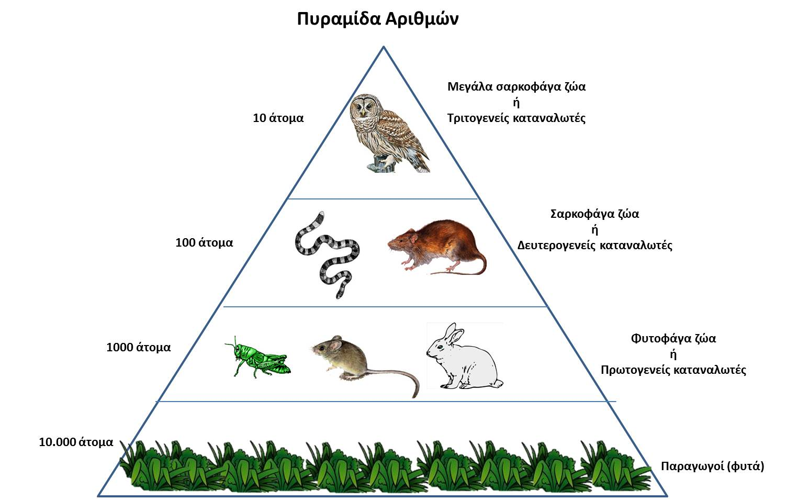
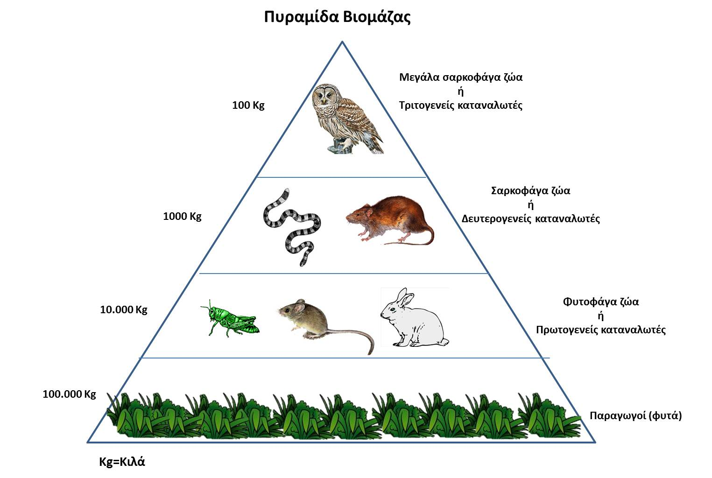

Ομάδες οργανισμών που παρουσιάζουν τις ίδιες διατροφικές συνήθειες αντιστοιχούν σε τροφικά επίπεδα. Οι τροφικές σχέσεις των οργανισμών μπορούν να παρασταθούν γραφικά με τρεις τρόπους: με το ενεργειακό περιεχόμενο ή με το αριθμητικό σύνολο των οργανισμών ή με τη βιομάζα κάθε τροφικού επιπέδου. Γραφικές απεικονίσεις τέτοιας μορφής ονομάζονται οικολογικές πυραμίδες λόγω του σχήματος που εμφανίζουν. Τοποθετώντας ένα τροφικό επίπεδο πάνω από άλλο, μπορούμε να επιτύχουμε μια οικολογική πυραμίδα, η οποία μπορεί να χρησιμοποιηθεί για να περιγράψει τη σύνθεση ενός οικοσυστήματος όσον αφορά τους ζωντανούς οργανισμούς. Με την εξέταση οποιασδήποτε οικολογικής πυραμίδας, μπορούμε εύκολα να διακρίνουμε ότι το μέγεθος των επόμενων τροφικών επιπέδων μειώνεται σταθερά από τη βάση προς την κορυφή της πυραμίδας.
Οι πυραμίδες των αριθμών απεικονίζουν τον αριθμό των οργανισμών που βρίσκονται σε κάθε επίπεδο της πυραμίδας. Καθώς προχωρούμε κατά μήκος των τροφικών επιπέδων από τους παραγωγούς προς τους καταναλωτές ανώτερης τάξης, παρατηρείται μια σταδιακή μείωση του αριθμού των οργανισμών η οποία όμως συνοδεύεται συνήθως από αύξηση του μεγέθους τους.
Οι πυραμίδες βιομάζας αντιπροσωπεύουν πρακτικά το συνολικό βάρος (βιομάζα) των οργανισμών κάθε τροφικού επιπέδου ανά μονάδα επιφάνειας σε μια συγκεκριμένη χρονική στιγμή. Συνήθως οι πυραμίδες βιομάζας παρουσιάζουν μια σταδιακή μείωση της βιομάζας όσο ανερχόμαστε σε ανώτερα τροφικά επίπεδα.
Οι πυραμίδες ενέργειας απεικονίζουν το ρυθμό με τον οποίο το ενεργειακό περιεχόμενο της διαθέσιμης τροφής κάθε τροφικού επιπέδου μεταφέρεται στο επόμενο. Η ενέργεια που μεταφέρεται στο επόμενο τροφικό επίπεδο είναι πάντα μικρότερη σε σύγκριση με την ενέργεια που έχει εισαχθεί στο προηγούμενο τροφικό επίπεδο. Έχει υπολογιστεί ότι περίπου το 10% της ενέργειας που αποθηκεύεται σε κάθε τροφικό επίπεδο μεταφέρεται στο επόμενο τροφικό επίπεδο.

Πυραμίδα αριθμών

Πυραμίδα βιομάζας
Πυραμίδα ενέργειας